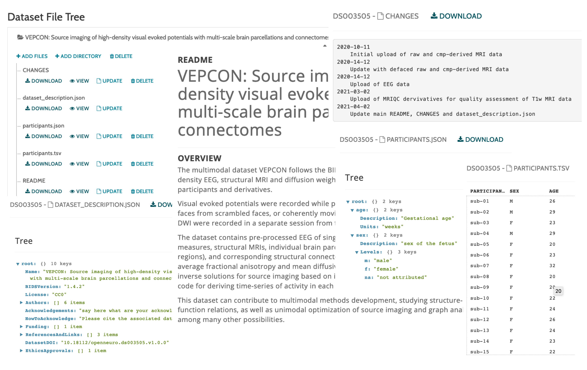
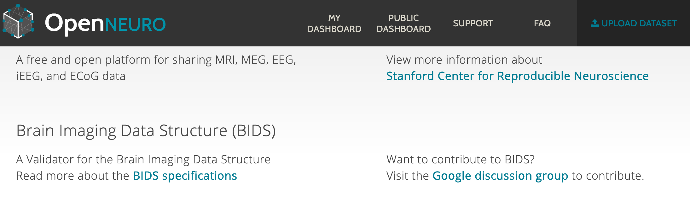

Standardization of neuroimaging data in Synapsy
Synapsy DMP Online Meeting
April 21, 2021


Why is it useful?
Execution of DMP satisfying open science requirements
Advantages of adopting a standard
How?
Keys towards FAIR neuroimaging data in Synapsy
The Road Map
Step 1: Understanding how datasets are organized in each lab
Step 2: Creation of BIDS datasets for raw data
Step 3: Adoption of Datalad
Step 4: Creation of dataset catalog
Step 5: Dataset publication
What is BIDS?
Specifications to organize and describe neuroimaging data that complies with the FAIR concept
Comprehensible organization and naming with well-accepted formats

Consistent image acquisition metadata

Consistent dataset documentation and experiment metadata

Why BIDS?
Neuroimaging data standard originating from MRI
Results from www.webofknowledge.com (Date: March 07, 2021)
Allow use to make Synapsy neuroimaging data FAIR and ready to be compliant with the SNSF requirements
Make data fully understandable by itself thanks to its consistent metadata and documentation
Facilitate data sharing between lab members and collaborators part of Synapsy
Make code interoperable between projects, lab members, and collaborators part of Synapsy
Very little effort to deposit neuroimaging Synapsy neuroimaging data to open databases

Databases such as OpenNeuro, LORIS, COINs, XNAT, SciTran and others accept and export datasets organized following BIDS
Benefit of dedicated and well documented tools
For validation and data curation support
https://bids-standard.github.io/bids-validatorFor dataset query
>>> from bids import BIDSLayout
>>> layout = BIDSLayout('/home/data/ds000117')
>>> layout.get_subjects()
>>> BIDS = bids.layout('/home/data/ds000117');
>>> bids.query(BIDS, 'subjects')
For analysis
A number of processing pipelines handling BIDS datasets (BIDS Apps) are available, ranging from quality control to preprocessing, connectome mapping, and statistical analysis

How does BIDS apply for EEG?
BIDS extension for EEG
An overview
Follow the general BIDS data structure originating from MRI with some modifications to accommodate EEG data types
Figure adapted from https://doi.org/10.1038/s41597-019-0104-8
An overview
Follow the general BIDS data structure originating from MRI with some modifications to accommodate EEG data types
Figure adapted from https://doi.org/10.1038/s41597-019-0104-8
EEG tools supporting BIDS
- MNE-BIDS: Python package that allows you to read and write BIDS-compatible datasets with the help of MNE-Python.
- FieldTrip: Can read data from all EEG and MRI file formats that are supported in BIDS and includes the data2bids function to convert data to the BIDS structure.
- bids-matlab-tools: Collection of functions to import and export BIDS-formated experiments, tailored for use as an EEGLAB plugin